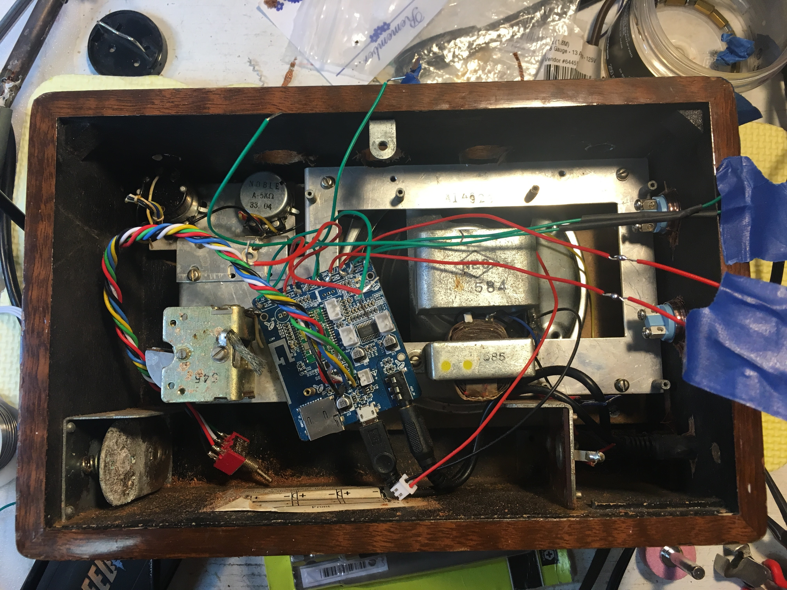
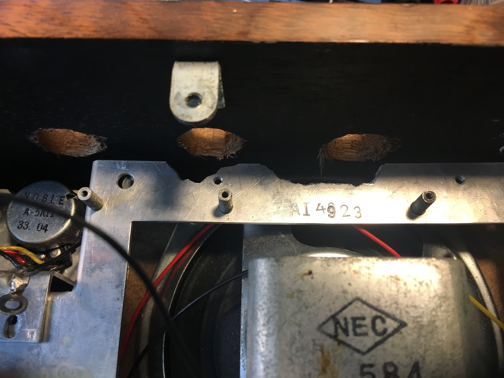
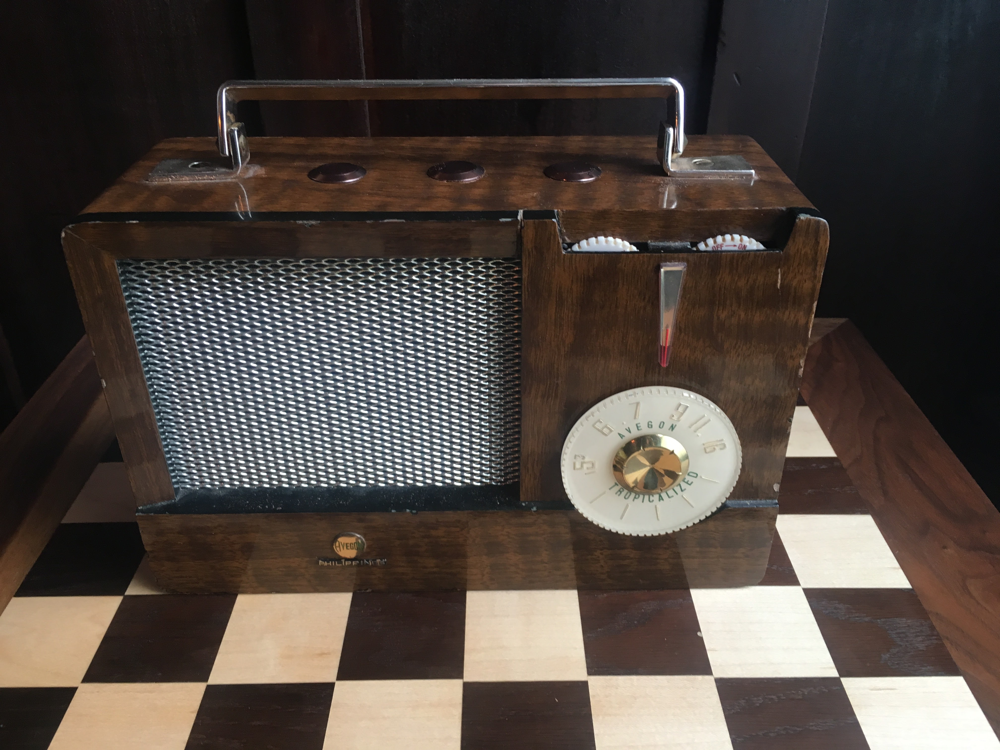

{kind=link}
Tear Down
I felt a little bad disassembling a transistor radio, but it didn't work anymore. Also, I think my grandparents would be happy that someone is actually using it again.

{kind=link}
I searched on eBay for a bluetooth audio reciever
that was powerful enough to power a speaker. 2-6 weeks later, an ePacket arrived at my house.
I found the perfect set of metal pushbuttons to put on the radio -- they were the "coffee" color, so they looked brown and not too foreign.
I was trying to keep the original aesthetic and didn't want flashing LEDs taking away from the device's authenticity. The push button's seller accidentlly sent me a button with a siezed washer on it. I sent him a photo and explained what happened and he mailed aout a new unit a few days later. He was really great about it.
Eventually, I unsoldered the buttons to control the device and soldered on new buttons.
Miscalculations

{kind=link}
Unfortunately, I misjudged the place where I should grind the bracket, and had to make a second trip to grind down just a bit more.

{kind=link}
The hardest parts of the project were:
- waiting for parts
- measuring where to cut the holes in the wooden radio
I knew I had to be extremely careful to place the buttons to avoid the internal components.
Also, I felt I would disappoint my grandparent's memory by destroying one of their antiques.
I'm glad everyting worked out in the end!
{kind=link}